Note: Because EXIF focal metadata was unavailable in these files, f_px was estimated from 24mm-equivalent focal length using image diagonal conversion.
Extra Credit Results
SIFT keypoints: image1 11780, image2 11944
Correspondences before RANSAC: 2521
Inliers after RANSAC: 371 / 2521 (14.7%)
Valid triangulated 3D points: 363
Mean reprojection error (valid points): 8.60 px
Pose (roll/pitch/yaw): 10.13 / 31.19 / 14.89 deg
Translation direction: [-0.9674, -0.1659, 0.1914]
Extra Credit Visualizations
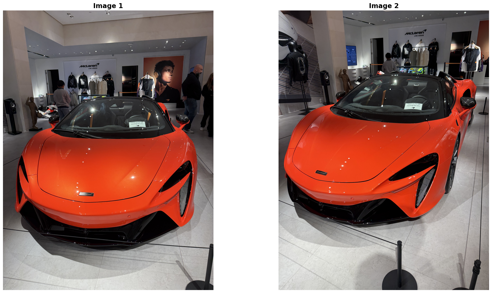
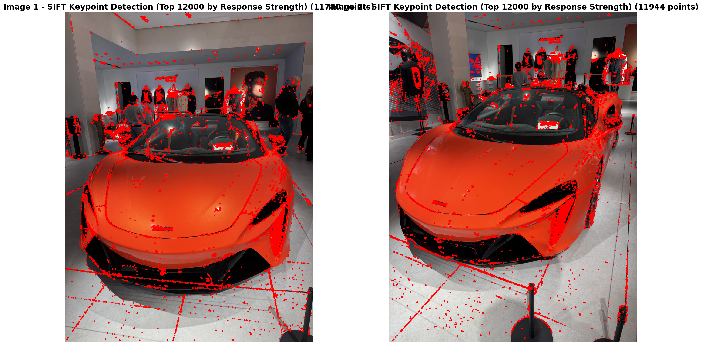
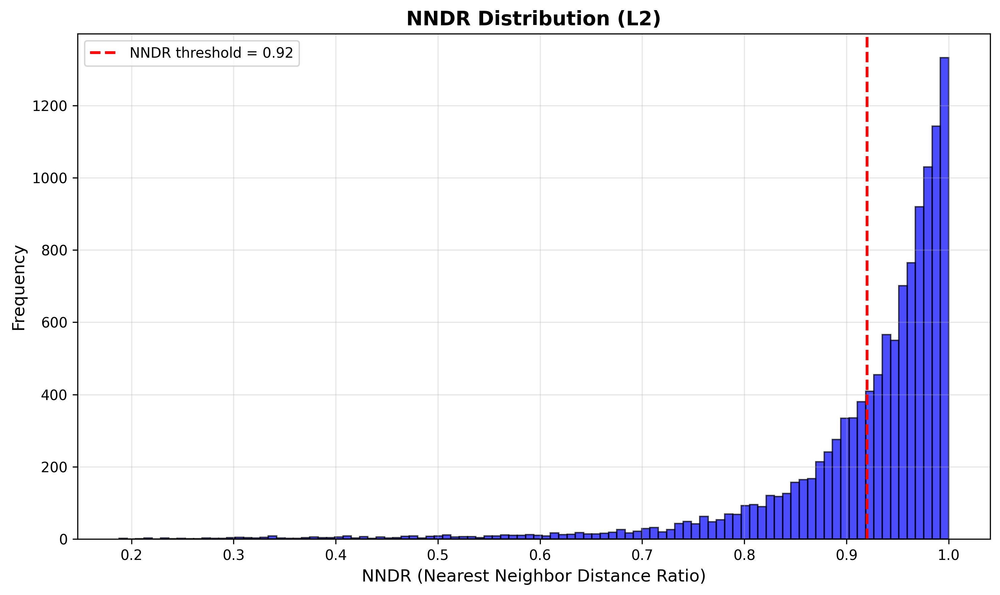
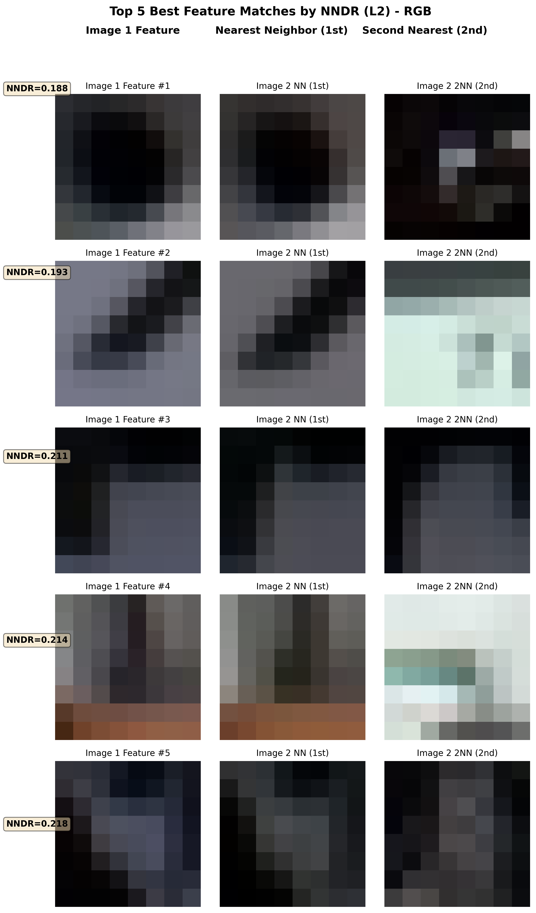
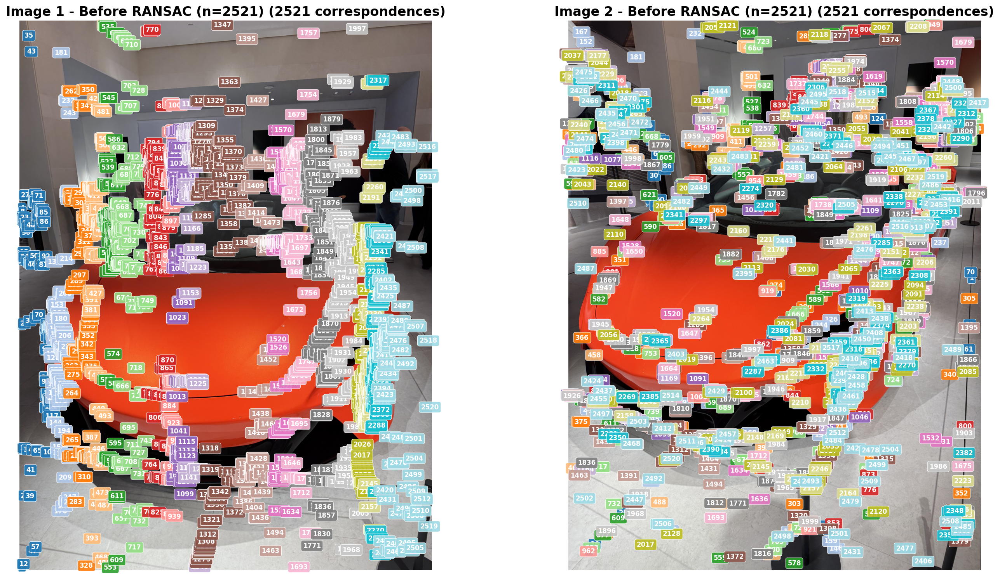
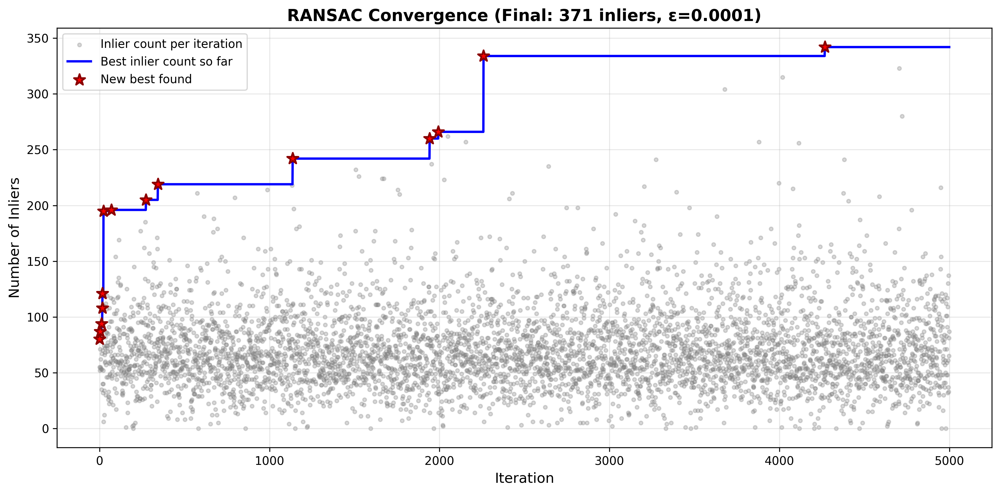
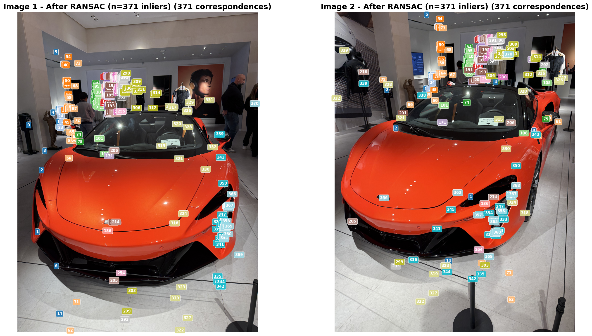
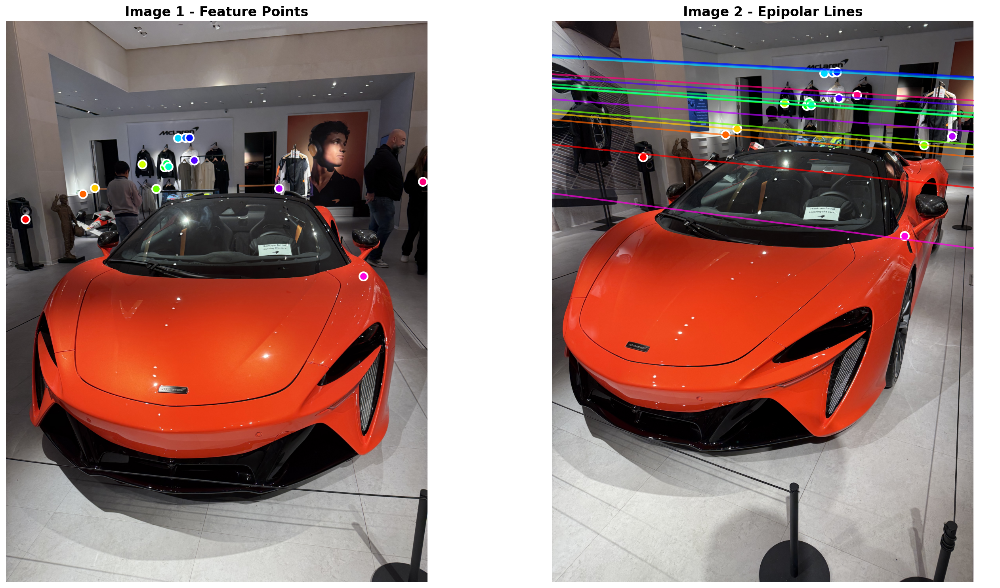
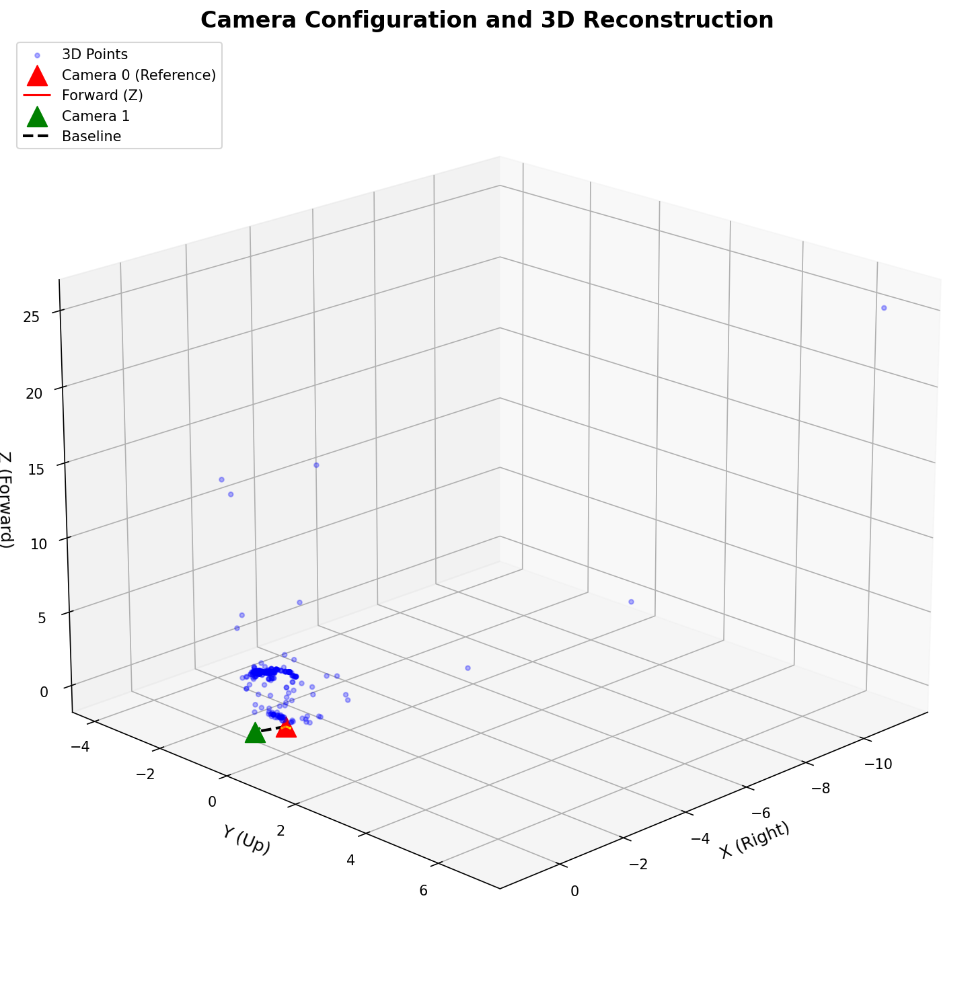
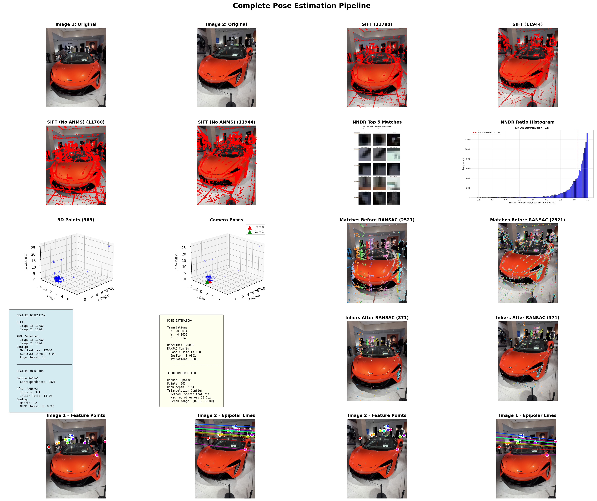
Extra Credit Viser Screenshots
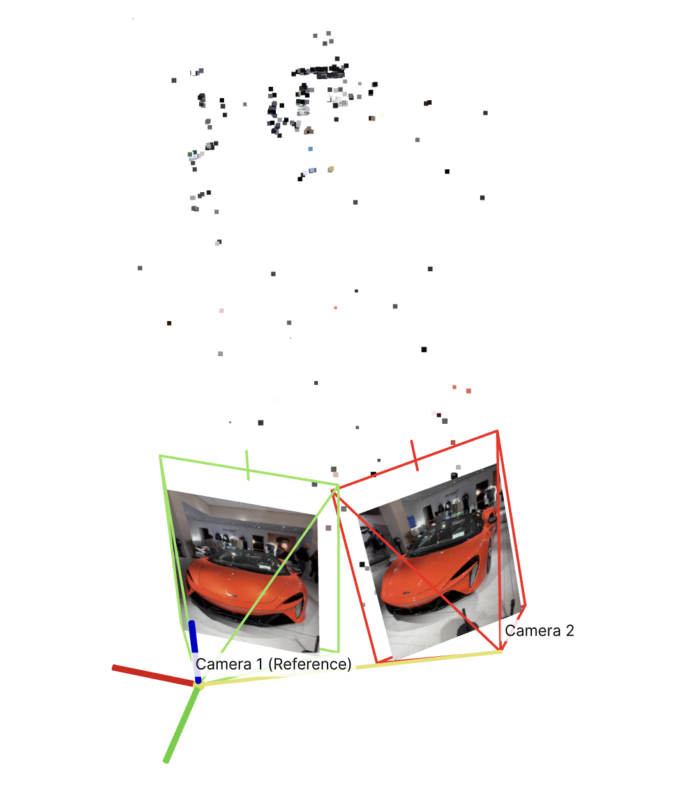
View 1: both camera visible; the front dense cluster aligns with the McLaren Artura body, while upper sparse points align with wall details (Lando Norris poster).
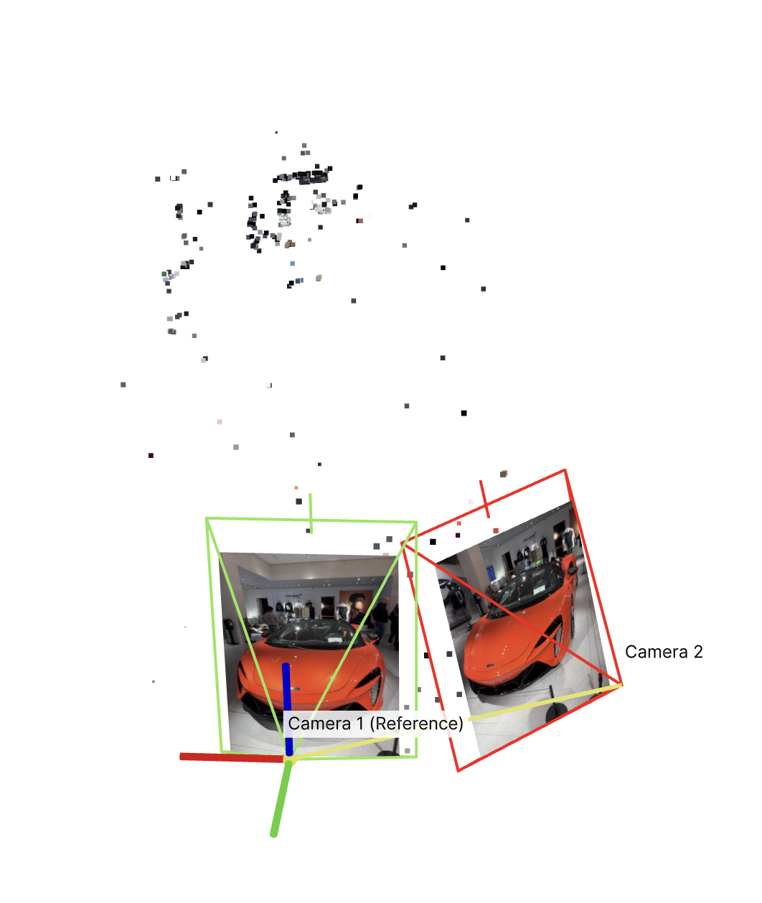
View 2: camera 2 appears shifted to the right of camera 1, consistent with the two captures.
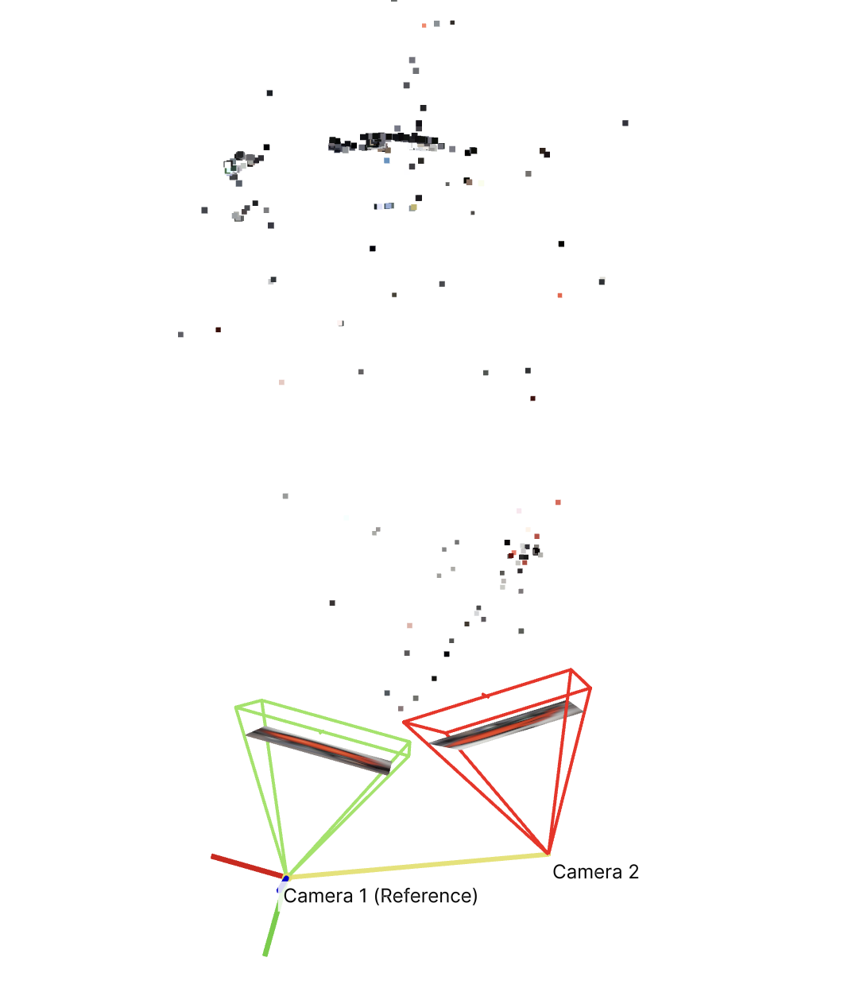
View 3: side/top-oblique view highlights depth layering; the elongated strip points correspond to the Artura, and upper points are consistent with the poster region.